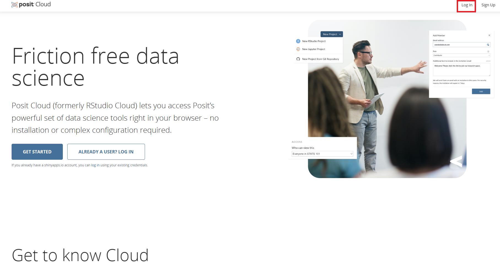
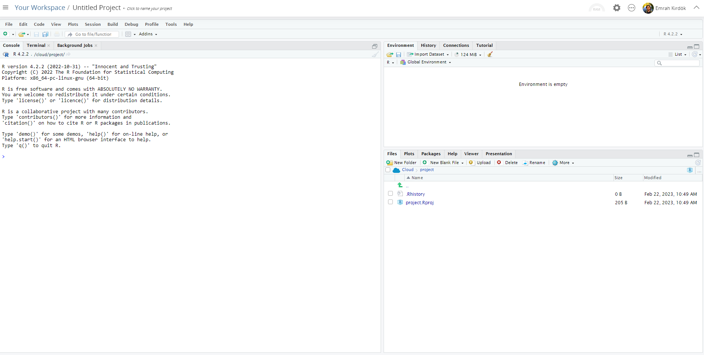

1 R ve RStudio
Bu ders kapsamında, açık kaynaklı olarak dağıtılan R istatistik paketi ve bu paketin bütünleşik geliştirme platformu olan RStudio masaüstü programını kullanacağız.
R istatistik paketi, son yıllarda yaşam bilimleri ve biyolojik veri analizi alanında sıklıkla kullanılmaktadır. Hatta, biyolojik veri analizi için önemli olan R paketleri, Bioconductor sistemi içerisinde sürekli bir şekilde güncellenmektedir.
R istatistik paketini, istastiksel ve grafiksel işlemlerin yapıldığı bir çekirdek sistem olarak düşünebilirsiniz. RStudio ise, R istatistik paketi ile iletişimizi sağlayan ve R’a yeni işlevler kazandıran bir kabuk gibi de düşünebilirsiniz.
Bu ders kapsamında R ve RStudio programlarını kullanmanız için iki farklı yolunuz var. İlk olarak RStudio programını geliştiren posit şirketi tarafından sunulan posit cloud platformunu kullanabilirsiniz. İkinci yol ise, bilgisayarınıza R ve RStudio programlarını kurarak, R ve RStudio programlarının bütün özelliklerinden faydalanabilirsiniz.
1.1 Posit Cloud
Eğer bu yolu tercih ederseniz, sadece interenete bağlanabilen bir bilgisayar rahatlıkla işinizi görecektir. İlk başta bu yöntemi tercih edebilirsiniz, ancak bu sistem size kısıtlı bir ücretsiz kullanım hakkı vermektedir. Posit cloud platformunda bir hesap açarsanız, ayda 25 işlem saati boyunca RStudio üzerinde çalışma hakkınız bulunmaktadır. Aylık 25 işlemci saatini aşarsanız, ya ücret ödemeniz gerekir, ya da bir sonraki ayı beklemeniz gerekmektedir.
Bu terim, bir ay boyunca size tanınan işlemci kullanarak yapılan hesaplama hakkını belirtir. Ya da toplam kod çalıştırma hakkınız. Eğer hesaplama yapmıyorsanız, bu işlemci saatlerinizi kullanmazsınız.
1.1.1 Posit Cloud sistemine giriş
İlk olarak Posit cloud sitesine gidelim ve Sign Up tuşuna tıklayarak yeni bir hesap açalım. Eğer hesabımız var ise, Login tuşuna basarak hesabımıza giriş yapalım (Şekil 1.1).

Arından, New Project tuşuna basalım ve New RStudio Project tuşuna basarak yeni bir R projesi oluşturalım (Şekil 1.2).

Eğer her şey yolunda gittiyse, yeni bir R proje ekranı ile karşılaşmamız gerekir (Şekil 1.3)

Tebrikler, Posit Cloud sistemi ile R ve RStudio kullanmaya hazırsınız artık!
1.2 R ve RStudio kurulumu
Eğer bilgisayarınza R ve Rstudio kurmak isterseniz - ki bu yöntem uzun vadede tavsiye edilir - bu yoldan gitmelisiniz. Bunun için öncelikle bilgisayarınızın mimarisini öğrenmeniz gereklidir. En güncel işlemci mimarisi 64 bit şu anda, ancak hala 32 bit bilgisayarlar dolaşımda bulunmakta. İşlemci mimarinize uygun R ve RStudio programlarını indirmeniz gereklidir.
Öncelikle R istastik paketini kurmalısınız, daha sonra RStudio masaüstü programını kurmanız gerekir. Sadece RStudio kurmanız yeterli değildir.